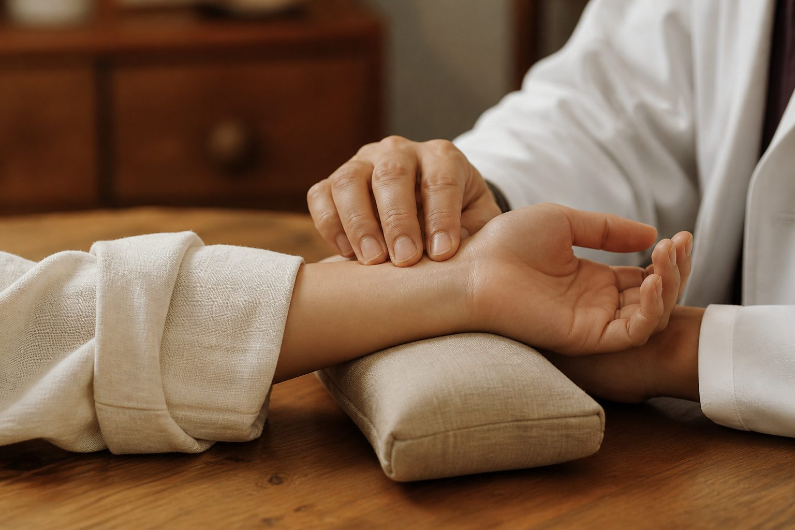
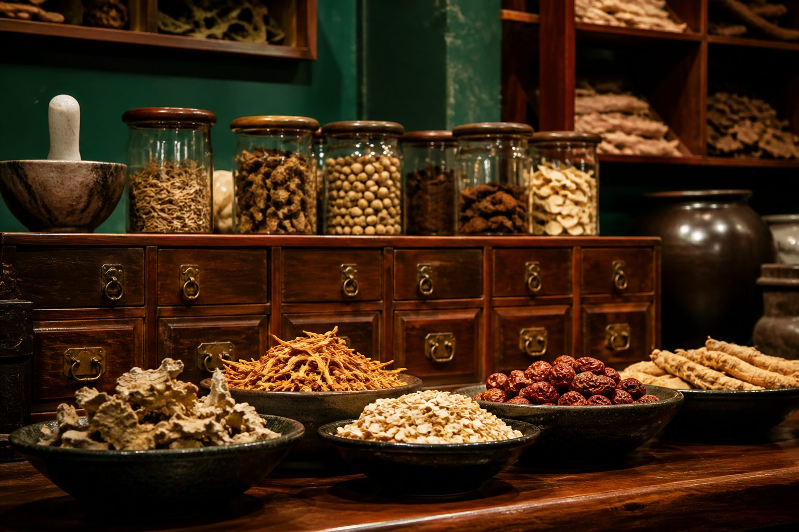
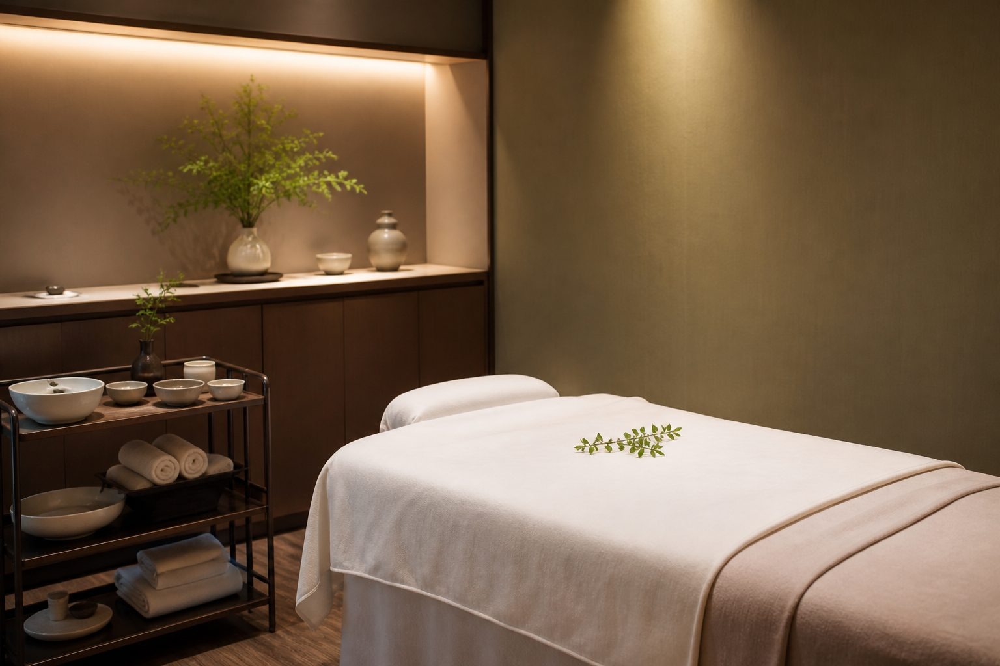

목 · 어깨 — 경항부 통증
오래 앉아 일하는 분들의 결림과 긴장성 두통. 목 주변 근육과 견갑골 안쪽을 함께 봅니다.

통증·체형, 다이어트·보약, 피부·안면은 서로 다른 문제처럼 보이지만 같은 몸에서 일어나는 일입니다. 진찰표 하나에 담아 우선순위를 정합니다.
아픈 곳만 치료하면 3개월 뒤 같은 자리로 돌아옵니다. 침과 약침으로 통증을 먼저 낮추고, 추나와 운동으로 아픈 자세를 바꿉니다. 1회 치료 시간은 20–30분, 첫 주는 2회를 권합니다.

진찰 · 맥진과 가동범위 검사오래 앉아 일하는 분들의 결림과 긴장성 두통. 목 주변 근육과 견갑골 안쪽을 함께 봅니다.
급성 통증은 침과 약침으로 먼저 낮추고, 골반 정렬과 코어 운동으로 재발을 줄입니다.
계단과 오래 걷기에서 아픈 관절. 부종과 가동 범위를 확인하고 무리한 운동을 조정합니다.
통증이 없어도 자세가 무너져 있으면 다시 아픕니다. 책상 높이와 스트레칭까지 함께 처방합니다.
맥·복진과 가동 범위, 자세를 확인합니다. 필요하면 영상 검사를 권합니다.
예상 횟수, 주당 방문 횟수, 총 비용을 첫날 표로 정리합니다.
침·약침·추나를 조합합니다. 3회마다 반응을 확인하고 조정합니다.
책상·베개·운동을 함께 조정해 치료가 끝난 뒤를 준비합니다.
| 항목 | 기준 | 비용 (예시) |
|---|---|---|
| 초진 진찰 | 50분 · 진찰 + 상담 | 25,000원 |
| 재진 진찰 | 경과 확인 · 25분 | 15,000원 |
| 침 치료 | 1회 | 18,000원 |
| 약침 치료 | 1회 · 부위별 | 30,000원~ |
| 추나 요법 | 1회 · 20분 | 45,000원~ |
| 통증 한약 | 10일분 · 원내 조제 | 120,000원~ |
위 비용은 샘플 페이지용 예시입니다. 실제 비급여 항목은 진찰 후 항목별로 다시 안내드립니다.
체질 진단으로 시작합니다. 같은 식사에도 살이 붙는 방식이 다르기 때문에, 처방은 체질과 생활 패턴에 맞춰 달라집니다. 무리한 단식이나 검증되지 않은 감량 약재는 쓰지 않습니다.

원내 조제실 · 약재 보관체질 설문과 진찰을 함께 봅니다. 식습관·수면·대소변 패턴을 기록해 처방의 기준을 만듭니다.
복부·부종·식욕 패턴에 따라 처방을 나눕니다. 2주마다 조정하며 식사 기록을 함께 봅니다.
출산 후 체력과 부종, 수면 부족을 함께 다룹니다. 수유 중에는 처방 가능한 약재로만 조제합니다.
피로가 오래가는 분들을 위한 보약 상담. 필요한 경우에만 권하고, 과잉 처방은 하지 않습니다.
설문과 진찰로 체질과 현재 컨디션을 정리합니다.
식습관과 생활 시간에 맞춰 탕약·환제를 고릅니다.
체중·부종·수면 변화를 확인하고 처방을 조정합니다.
감량 종료 후 3개월은 식사 습관과 보조 처방으로 유지합니다.
| 항목 | 기준 | 비용 (예시) |
|---|---|---|
| 체질 진단 | 60분 · 설문 + 진찰 | 40,000원 |
| 다이어트 한약 | 10일분 · 원내 조제 | 150,000원~ |
| 산후 보약 | 10일분 | 180,000원~ |
| 공진단 | 1환 | 90,000원~ |
| 경옥고 | 1개월분 | 250,000원~ |
한약은 진찰 후 처방하며, 체질과 복용 중인 약에 따라 조제 내용이 달라집니다. 위 금액은 예시입니다.
안면마비는 발병 후 가능한 빨리 치료를 시작하는 것이 중요합니다. 침과 한방 외용 처방으로 얼굴 근육의 긴장을 조절하고, 표정 회복까지 단계별로 확인합니다.

안면 치료실 · 1인 1실발병 초기에는 염증과 부종 관리에 집중하고, 이후 표정 근육 회복 훈련으로 넘어갑니다.
얼굴 근육의 긴장과 붓기를 다룹니다. 시술 전 피부 상태를 확인하고 자극을 조절합니다.
반복되는 건조와 가려움은 몸속 열과 수분 균형을 함께 봅니다. 외용제와 내복 한약을 병행합니다.
두피 열감과 각질, 가려움을 확인합니다. 탈모 진행 중이라면 양방 검사가 필요한지 먼저 판단합니다.
발병 시점과 증상 범위, 피부 상태를 확인합니다.
급성기·회복기로 나눠 침 자극과 처방을 정합니다.
표정 움직임과 붓기 변화를 매번 기록합니다.
표정 근육 운동과 생활 관리로 마무리합니다.
| 항목 | 기준 | 비용 (예시) |
|---|---|---|
| 안면 진찰 | 30분 | 30,000원 |
| 안면 침 치료 | 1회 · 30분 | 25,000원 |
| 한방 팩 | 1회 | 30,000원 |
| 두피 관리 | 1회 · 35분 | 35,000원 |
| 외용 처방 | 1제 | 15,000원~ |
안면마비의 회복 기간과 정도는 개인에 따라 다릅니다. 발병 초기에는 양방 진료를 함께 받으시길 권합니다.
혈압·당뇨·항응고제 등 복용 중인 약을 알려주세요. 약침과 한약 처방에 반영합니다.
X-ray·MRI·혈액검사 결과를 가져오시면 진찰 시간을 더 정확하게 쓸 수 있습니다.
약침·추나·한약은 비급여입니다. 치료 전 항목별 금액과 총 예상 비용을 안내합니다.
초진 50분 진찰 후 가장 필요한 치료부터 순서를 정합니다.